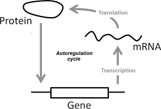

Transcription Factor Networks
Transcription factor networks
Once we know which genes each transcription factor regulates, we can consolidate this information into a transcription factor network. The nodes in the network represent an organism’s proteins, and we connect X to Y with an edge if X is a transcription factor that regulates the expression of protein Y. Any node can have an edge leading into it, but only a transcription factor can have an edge leaving it.
The figure below shows a portion of the transcription factor network for Escherichia coli, the workhorse model organism of bacterial studies. Even though E. coli is a bacterium, we will be able to draw powerful conclusions about gene regulation from its transcription factor network. The true network is much larger, consisting of thousands of genes and around 300 transcription factors1, and we will need to analyze it computationally to draw these conclusions.
Note that the edges in the E. coli transcription factor network below are colored red or green. An edge connecting X to Y is colored green if X upregulates Y, and it is colored red if X downregulates Y. (Alternatively, we could label the edges with a “+” or “-“.)
 A subset of the E. coli transcription factor network.2 An edge from X to Y denotes that X is a transcription factor that regulates Y. Edges corresponding to upregulation are colored green, and edges corresponding to downregulation are colored red. Click here to zoom in on this network.
A subset of the E. coli transcription factor network.2 An edge from X to Y denotes that X is a transcription factor that regulates Y. Edges corresponding to upregulation are colored green, and edges corresponding to downregulation are colored red. Click here to zoom in on this network.
{kind=link}
STOP: Click on the expanded view of the transcription factor network in the figure above. Do you notice anything interesting about this network?
Autoregulation
The E. coli transcription factor network seems to have a surprising number of loops, or edges that connect a node to itself. It is worth pausing for a moment to consider the implications of a loop in a transcription factor network. What does it even mean for a transcription factor to regulate itself?
A transcription factor is a protein, which means that because of the Central Dogma of Molecular Biology, the transcription factor is produced as the result of transcription and translation of a gene appearing in an organism’s DNA. In autoregulation, illustrated in the figure below, the transcription factor protein then binds to the DNA in the upstream region of the gene encoding the same transcription factor. This type of feedback is a beautiful and surprising feature of a simple biological system.
 A simplified illustration of autoregulation. “Protein” labels the transcription factor binding factor protein, which binds to the DNA encoding this transcription factor, labeled by “Gene”.3
Transcription factor autoregulation leads us to ask two questions. First, how can we conclude that the number of loops in a transcription factor network is “surprisingly large”? And second, if autoregulation is so common, then why would a transcription factor have evolved to regulate its own transcription?
-
Gene ontology database with “transcription” keyword: https://www.uniprot.org/. ↩
-
Samal, A. & Jain, S. The regulatory network of E. coli metabolism as a Boolean dynamical system exhibits both homeostasis and flexibility of response. BMC Systems Biology, 2, 21 (2008). https://doi.org/10.1186/1752-0509-2-21 ↩
-
Arani, B. M. S., Mahmoudi, M., Lahti, L., González, J., & Wit, E. C. (2018). Stability estimation of autoregulated genes under Michaelis-Menten-type kinetics. Physical Review E, 97, 62407. https://doi.org/10.1103/PhysRevE.97.062407 ↩